StarBiochem is a 3D protein viewer. StarBiochem runs on standard Linux, Windows and Mac computers.
To get started with StarBiochem:
Navigate to http://web.mit.edu/star/biochem.
Click on the Start button to launch the StarBiochem application.
This is the view you will see when
you open StarBiochem.
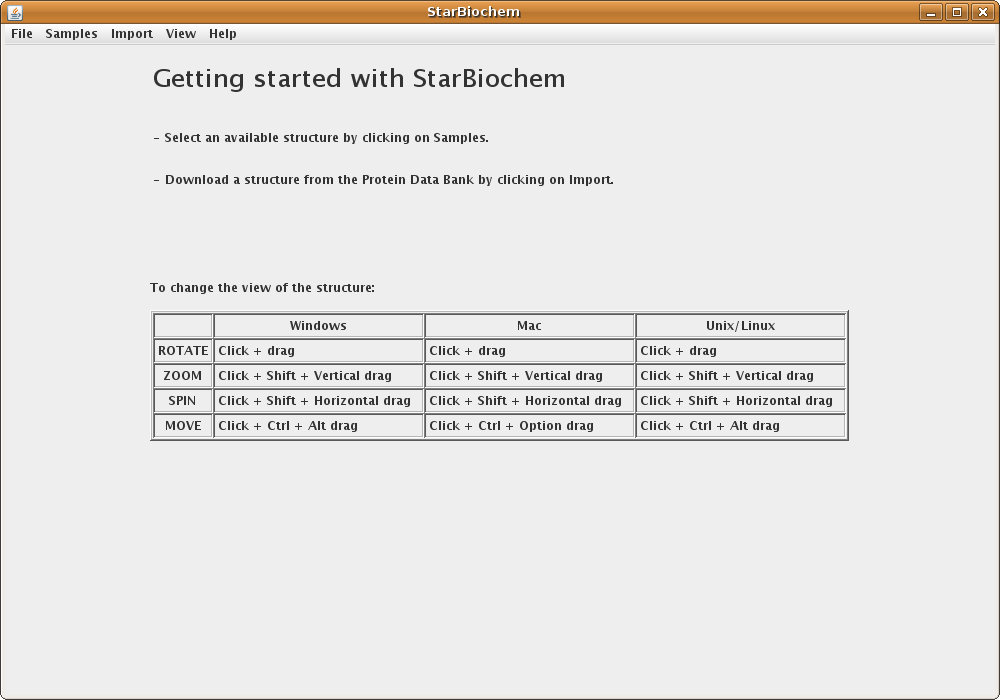
StarBiochem enables the visualization of molecules encoded within the Protein Data Bank (PDB) files. PDB files are named by a four-character ID such as “1GXX”. You may load files directly from the PDB, the Samples menu or open files stored locally on your computer.
Click on Import
-> RCSB (Protein Data Bank).
Enter the four-character ID of
a PBD file (eg. 3D9S), click Open. 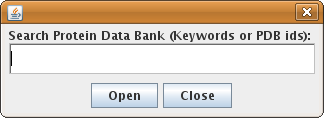
When the search results appear, choose the
desired PDB file and click Open. 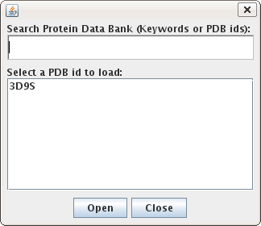
Alternatively, select a PDB file from list found in the Samples menu.
Upon opening a PDB file in StarBiochem, you will see a 3D model of the protein in the viewer.
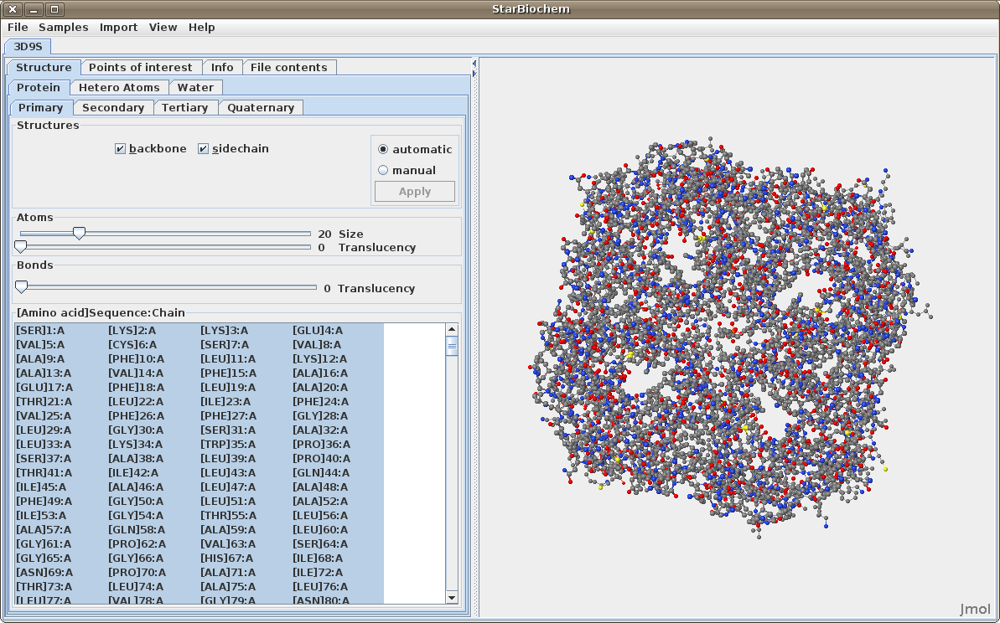
Note:
Each tab contains
Automatic and
Manual options
which allow you to choose when the changes made are
applied to the image.
When multiple PBD files are open, they can be closed individually or all at once by clicking on File -> Close, or File -> Close All respectively.
To change the view of the structure:
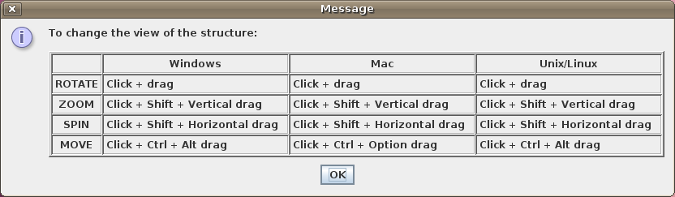
There are two different 3D models that are used by most protein 3D viewers, including StarBiochem, to visually represent the structure of molecules:
ball-and-stick model: the atom's nucleus is drawn as a ball and covalent bonds connection atoms are drawn as lines.
space-filled model: atoms are drawn as spheres, whose size represent the physical space an atom occupies (the nucleus plus its surrounding electrons, also called van der Waals radius).
You can switch from the ball-and-stick model to the space-filled model in StarBiochem by increasing the size render of the atoms in the structure.
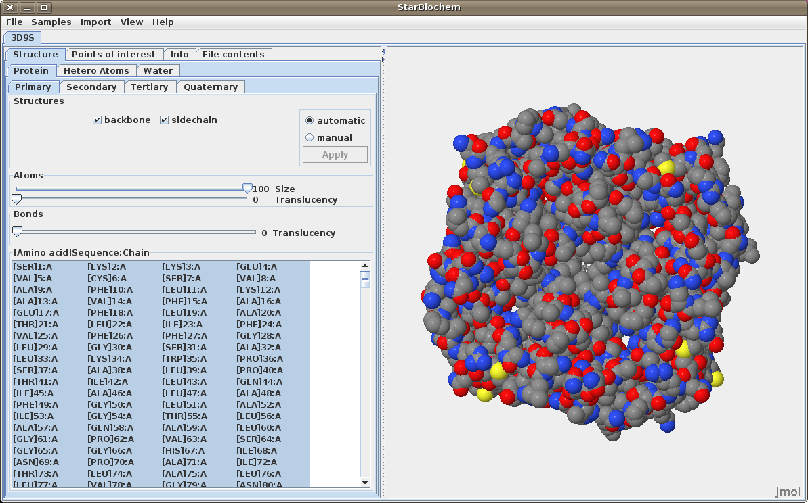
The default coloring scheme for atoms is as
follows:
(Hydrogen atoms are shown as white
though they are rarely
depicted)
The primary structure of a protein lists the amino acids that make up a protein’s sequence or the nucleotides that make up a DNA segment, but does not describe their corresponding shape. The secondary structure of a protein refers to how stretches of amino acids within a protein chain are arranged in space in characteristic patterns such as helices, sheets, and coils. The tertiary structure describes the folded shape of a protein chain and is determined by characteristic properties of the amino acid residues, such as acidic, basic, polar, and non-polar. The quaternary structure indicates the relationship between the chains of a molecule.
Displaying primary structures:
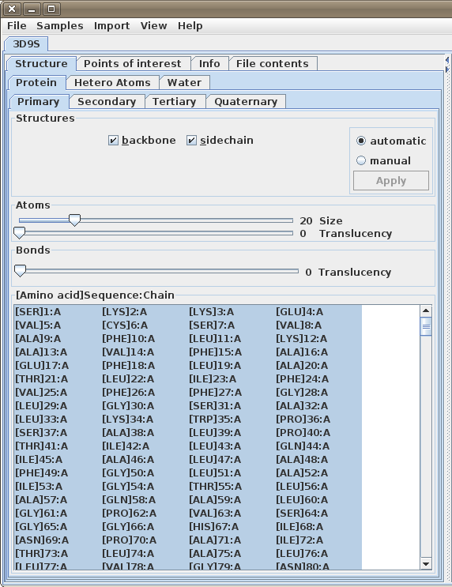
Displaying secondary structures:
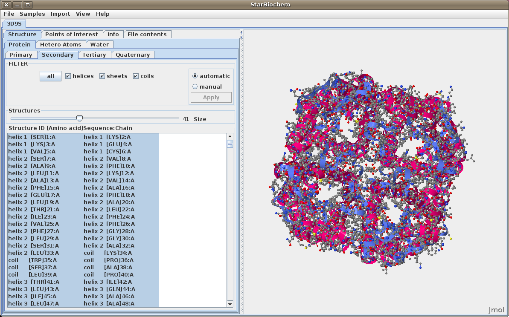
Displaying tertiary structures:
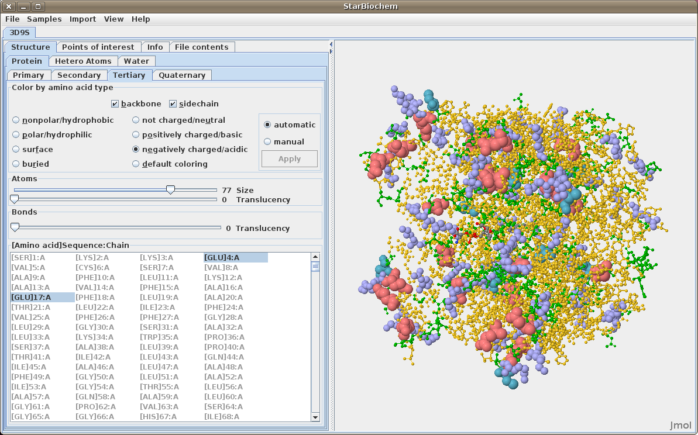
Displaying quaternary structures:
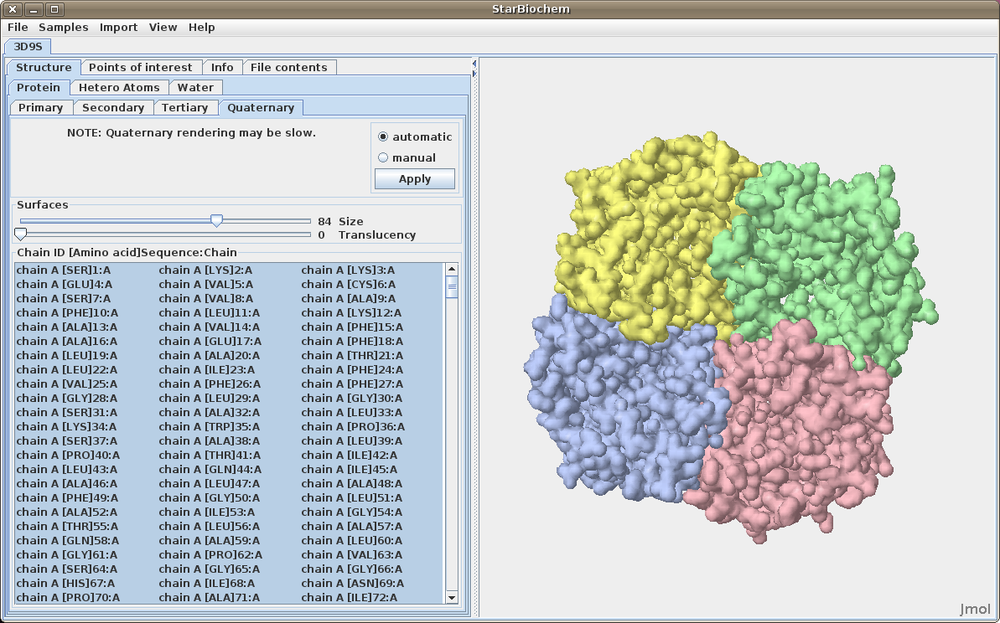
Displaying nucleic acids:
Click on the Nucleic Acids tab.
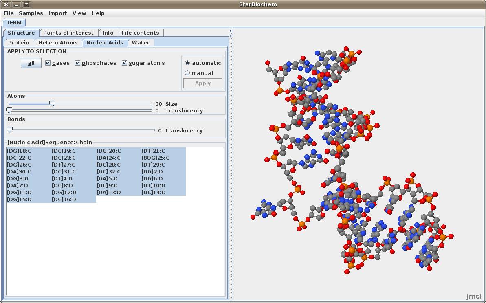
StarBiochem allows for selection of individual or groups of atoms and structures.
Selecting Sequences (Primary, Secondary and Tertiary):
Selecting Quaternary Sequences:
Displaying water atoms
Some proteins have the addition of a Water tab. Select this tab to see the oxygens that make up water molecules within the protein (hydrogens rarely defined).
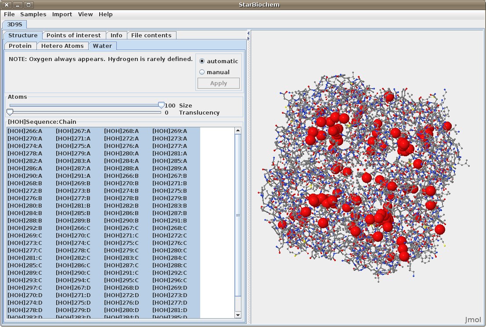
Displaying hetero atoms
Some proteins have the addition of a Hetero Atoms tab. Select
this to view any hetero atoms within the protein and
change their size in the viewer.
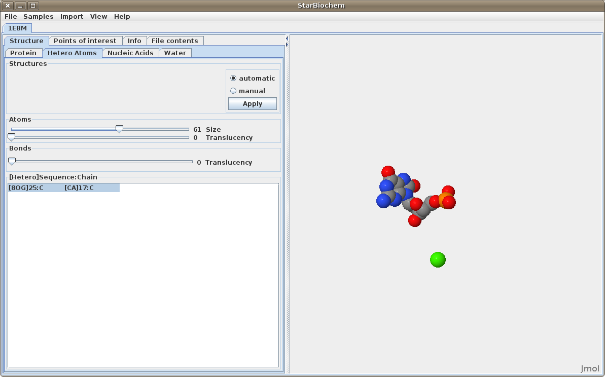